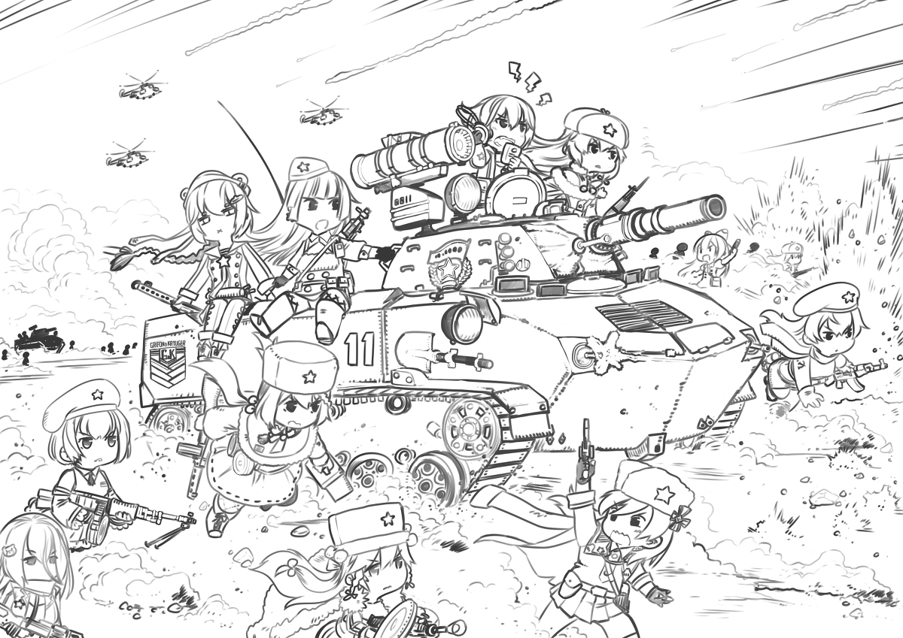

4小时后……
俄军第40海军步兵旅某连长泽柯夫少尉走上不久前发生战斗的高地，脸上的伤疤暗示着他的资历。
他打量着周围燃烧的残骸，惊异地发现一个熟悉的轮廓，他爷爷曾带他在卫国战争纪念馆里看过这种战车——当然那辆并没有着火。
“刚刚是他们在和我们战斗？”他不安地想道。他以前心里把他们当做同一阵营的战友——虽然关系不好——可惜现在他头顶上变了天。
他转向东边山丘上的朝阳。
“结束了，都结束了。”
身后传来一阵熟悉的低吟，他转过身查看。
是一台掉在地上的收音机。
他走近收音机，蹲下来查看，一旁的副连长也蹲了下来，把收音机摆正。
“啊，这首歌，真怀念啊，他们也喜欢听这个？”
“当初我爷爷可以不吃不喝守着它坐一个下午。”
“少说吧，早变天了，小心被人听见。”
旁边两个俄军士兵对着一个残骸指手画脚：
“这群傻子居然对着优势装甲部队冲锋？”
“真是群弱智。”
“给我闭嘴！你们两个不识好歹的蠢货！”泽柯夫吼道，“他们不是弱智，他们是红军。”
所有人一时无言。
一架梯形机翼的飞机突然略过，震得泽柯夫耳朵生疼。
“F-22？美国人怎么飞到这边来了？赶快联系团部。”
“导弹！”
“战斧？美国人在想什么？全联系不上了！”
“火箭弹！”
泽柯夫的身边一时被烈火笼罩。他看向天空，直接几道曳光弹光线指向他们的武装直升机群，在尽头留下拖着黑烟的坠落的直升机。
“这是怎么回事？”他转向那座山丘，看到在如血的朝霞中，一个个巨大的黑影出现在山丘上，喷吐着火舌，咆哮着冲向自己。中国的装甲集群已经像死亡屏障一般在他们的面前展开
“草原啊草原，辽阔草原一望无边，英雄们骑马飞过草原，哎嘿红军战士飞奔向前……”
他身后的收音机继续歌唱着，声音愈发高亢……未完待续
